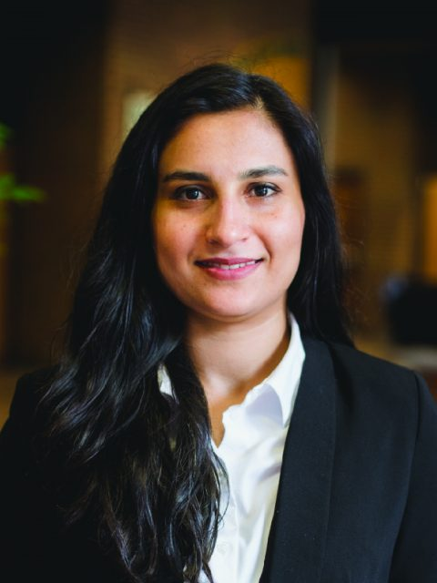
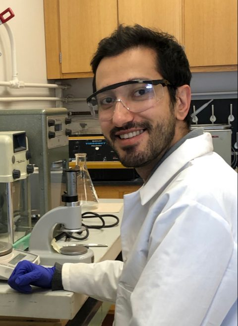
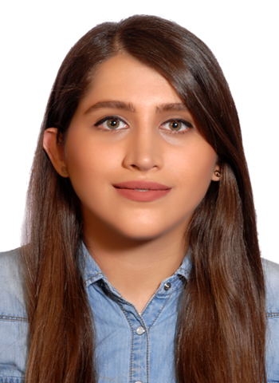
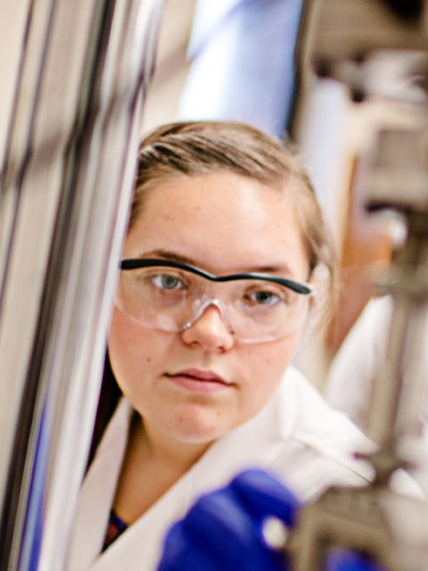

Principal Investigator


Dr. Abadi is an Assistant Professor of Mechanical Engineering-Engineering Mechanics at Michigan Tech. She received her Ph.D. degree in Mechanical Engineering from Georgia Institute of Technology, M.S. degree in Mechanical Engineering from the State University of New York at Buffalo, and B.S. degree in Aerospace Engineering from Sharif University of Technology. Prior to joining Michigan Tech, she was a NIH Postdoctoral Research Fellow in the Organ Design and Engineering Training (ODET) program in the Center for Nanomedicine at Harvard Medical School, Brigham and Women’s Hospital (2016-2017) and AAUW Postdoctora Research Fellow in the Biomaterials Innovations Research Center at Harvard-MIT Health Sciences and Technology (2015-2016). She is a recipient of the 2017 Scientist Development Grant from American Heart Association.
Ph.D Students

 MEEM 1008
MEEM 1008
 mkasraie@mtu.edu
mkasraie@mtu.edu
Masoud Kasraie
MEEM 1008
mkasraie@mtu.edu
Masoud joined Abadi lab in spring 2019 as a Materials Science and Engineering (MSE) Ph.D. student. He received his B.S. degree in MSE from Isfahan University of Technology in 2013 and his M.S degree in MSE form Shiraz University in 2016. His previous research focused on using PVP to improve the cooling rate for quenching steels and fabrication of Al–Sn bearing material using friction stir processing technique. He has published a paper in the Materials Research Express journal. As a PhD student, he is currently working on synthesis and application of nanomaterials.

MEEM
rbagheri@mtu.edu
Roya Bagheri
MEEM
rbagheri@mtu.edu
Roya Bagheri will join Abadi lab in Spring 2020 as a Mechanical Engineering-Engineering Mechanics (MEEM) Ph.D. student. She received M.Sc. in Biomedical Engineering/Biomaterials from the University of Tehran (UT) in 2018 and her B.Sc. degree in Material Science and Engineering from Iran University of Science and Technology (IUST) in 2015. Her M.Sc. project was on the effect of Bioactive Glass Nanoparticles (BGN) on physicochemical properties of gelatin-carboxymethylcellulose (CMC) for bone scaffold and B.Sc. research project was on the relationship between microstructure and mechanical properties of steel.
Undergraduate Students

Alicia Ball
Alicia Ball is studying Chemical Engineering at Michigan Technological University in Houghton, Michigan. She joined the lab for an internship to study different methods for differentiation of induced pluripotent stem cells to cardiomyocytes in 2017. During her spare time, she enjoys golfing, reading, and attending local events.
Alumni
Postdoctoral Scholars
Michael J. Hill (2017-2019)
Visiting Graduate Students
Rasoul Bayaniahangar (2017 - 2019)
Grace Billman-Benveniste (2019)
Undergraduate Students
Daniel Woodall (2018-2019)
Josh Loiselle (2017-2018)
High School Interns
Davaughn Smith (Summer 2018)
Korey Deans (Summer 2019)